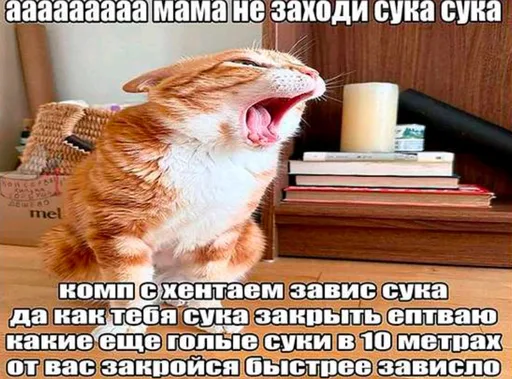
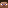

Зал шестнадцатыйКартины
Девятнадцать полотен в ванильном предмете «Картина»: от котика 1×1 до эпика 16×16. Своего предмета у них нет. Вешаешь обычную картину, а игра сама выбирает, какая из 45 влезет на стену, и мод подмешивает свои к ванильным.
Экспозиция
Все девятнадцать, в настоящих пропорциях: клетка сетки — один блок стены. Эпик сюда не влез, у него свой зал. Жми на любую: там размеры, шанс и кнопка «найти на стене».
Какая выпадет
Правило одно: из всех картин, которые влезают в это место, остаются только самые большие по площади, и уже из них берётся случайная. Поэтому на голой стене мелочь не выпадет никогда. Хочешь котика — строй нишу 1×1. Клик по стене вешает, клик по картине снимает. Киркой можно выбить блоки и сделать нишу.
Эпик 16×16


256 блоков стены
Самая большая картина в игре: в четыре раза шире любой ванильной (у тех максимум 4×4) и по площади больше в шестнадцать. Человечек внизу слева — Стив, в том же масштабе.
Раз побеждает самая большая, эпик выпадает всегда, когда на стене свободен квадрат 16×16 вокруг точки, куда кликнул. Соперников его размера просто нет.
Шансы по размерам
Все 19 картин мод дописал в ванильный тег placeable, так что в игре они лежат в одной куче с ванильными 26. Шанс ниже — для ниши ровно этого размера, когда больше ничего не влезает.
Повесить нужную
Предмета с конкретной картиной в 1.19.2 нет: в творческом инвентаре лежит только обычная «Картина». Нужна определённая — вызывай командой. Выбери полотно и сторону света, куда оно будет смотреть, команда соберётся сама. Встань вплотную к стене и глядя в неё.
Тонкости
Достижение
Ачивку получает ближайший игрок в радиусе 8 блоков от картины. Не обязательно тот, кто вешал: стоишь рядом с другом — может прилететь тебе.
Проверка срабатывает, когда картина появляется в мире. А это ещё и каждая загрузка чанка: вернулся к старой boobs, и ачивка прилетит тому, кто рядом.
Ниша ровно 4×3, чтобы 4×4 не влезла. Кандидатов пять: boobs, 20th_century_boys, frog и ванильные skeleton с donkey_kong. Шанс 20% за попытку.
Версии
Руками не трогать.
Шутка, трогай.